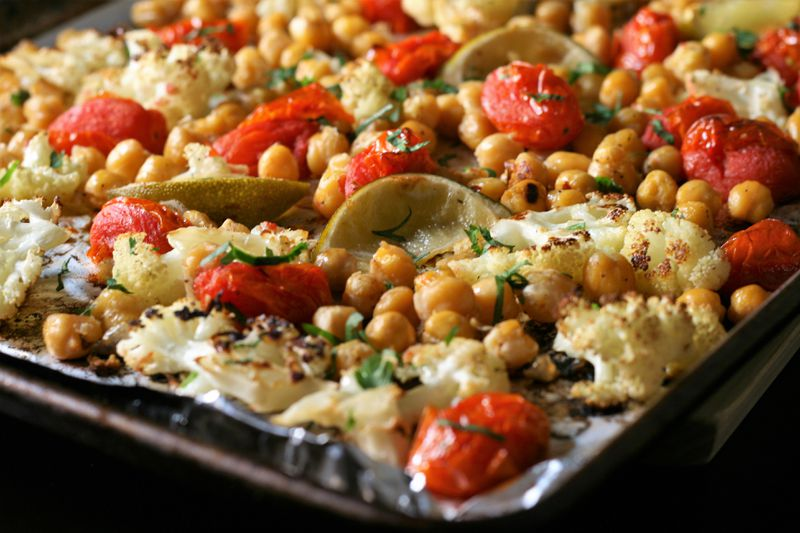

Lasagna

Lasagna Recipe from Thomas Lopez
Description:
This lasagna receipe is quite tasty and enjoyable.
Not expensive, well, other than the ground beef.
Ingredients
- 4 cups mozzarella cheese
- 1.2 cup parmesan cheese
- 1.2 pound lean/fatty ground beef
- 12 lasagna noodles/pasta
- 36 ounces pasta sauce (such as tomato sauce)
- salt/pepper to taste (2-4 tablespoons)
- garlic to taste (2 tablespoons)
Steps
- Set oven to 350°F, allow 5+ min to preheat
- boil lasagna noodles
- drain while rinsing the noodles
- mix beef with garlic and salt/pepper
- cook beef with spices/seasoning on medium heat until browned
- stir pasta sauce with salt/pepper and garlic to taste for 3-5 minutes
- combine mozzarella and parmesan cheese with salt
- spread pasta sauce on pan while placing lasagna noodles over the sauce
- spread meat over noodles
- Cover with foil and bake for 45 minutes